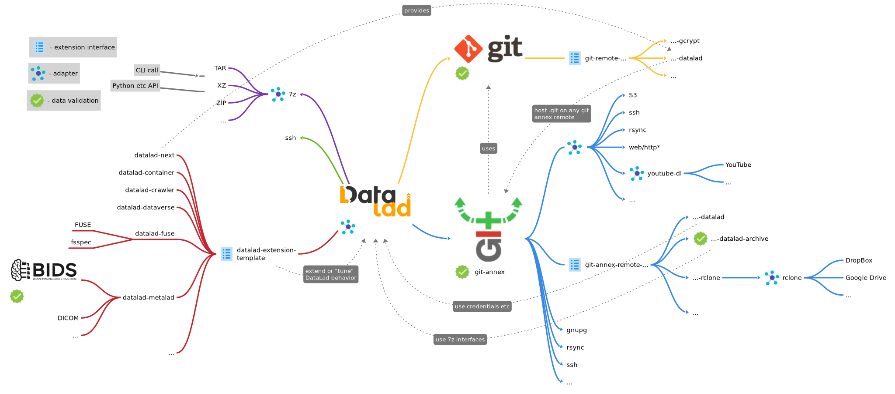
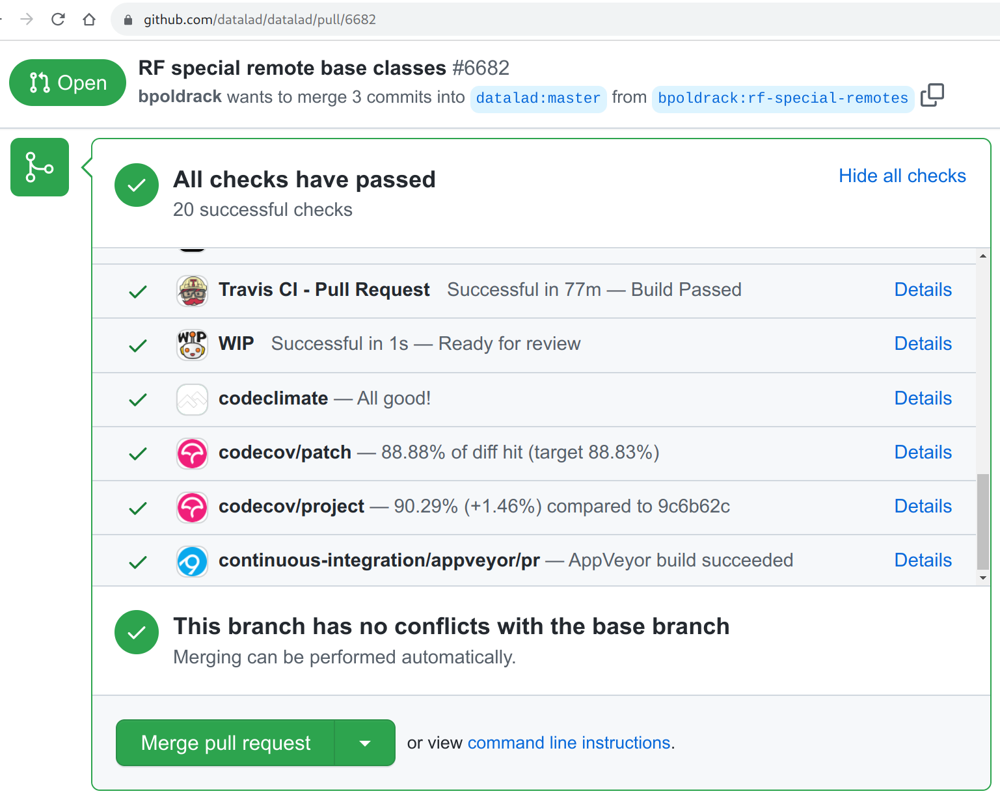

Towards the Big Data Neuroscience Nirvana
Yaroslav O. Halchenko @yarikoptic @yarikoptic
|
|
|
Center for Open Neuroscience Department of Psychological and Brain Sciences Center for Cognitive Neuroscience Dartmouth College |


From WordNet (r) 3.0 (2006) [wn]:
nirvana
n 1: (Hinduism and Buddhism) the beatitude that transcends the
cycle of reincarnation; characterized by the extinction of
desire and suffering and individual consciousness [syn:
{nirvana}, {enlightenment}]
2: any place of complete bliss and delight and peace [syn:
{Eden}, {paradise}, {nirvana}, {heaven}, {promised land},
{Shangri-la}]
Q: Where data go to die?
Data archive
Q: How data are reincarnated?
Re-used from archive(s)
... by helping data to transcend the data archive(s)
Q: How to get to a state of complete bliss and delight and peace while working with (big) data?
Make re-use convenient
What makes data re-use INconvenient?

- Data bugs. Possible origins:
- Human entry
Solution: minimize (automate, ReproNim is coming!) - Software (human code)
Solution: avoid creating new, re-use (needs standardized interfaces),
automate and standardize! testing. - Hardware (made by humans)
Solution: write software to auto-detect (QA/QC. Join INCF niQC).
- Human entry
What makes data re-use INconvenient?

- Ad-hoc data access
Solution: standardize (HTTP 401/403, OAuth, etc),
think about both humans (UI) and bots (API) - Crafty data format/organization
Solution: standardize, simplify and automate organization (ReproNim/ReproIn ) - Opinionated software
Solution: avoid creating new; IO and interfaces ideally should
use standards (e.g., BIDS/BIDS-Apps, BrainLife ABCD, Boutiques)
What allows to make data re-use convenient?

Bits of BIDS
- Standards
- The language(s) for humans and/or computers
- UNIX Philosophy #1: "Make each program do one thing well" applies
- An application CLI/API is an "internal standard"
- Reuse/improve/adapt/convert/... instead of re-implement!
- Accompany with tools to validate
- Validation
- Huge part comes "for free" from standardization
- contemporary "standard practices" for
software development
(CI, containerization, distributions)
- contemporary "standard practices" for
software development
- Data "quality" is a separate (niQC!) topic
- Validate (test) your software code - tools are out there!
- Huge part comes "for free" from standardization


A data management suite that makes data access and management as easy as managing code and software!
|
DataLad: distributed system for joint management of code, data, and their relationship. Y. Halchenko, K. Meyer, B. Poldrack, D. Solanky, A. Wagner, J. Gors, D. MacFarlane, D. Pustina, V. Sochat, S. Ghosh, C. Mönch, C. Markiewicz, L. Waite, I. Shlyakhter, A. de la Vega, S. Hayashi, C. Häusler, J.-B. Poline, T. Kadelka, K. Skytén, D. Jarecka, D. Kennedy, T. Strauss, M. Cieslak, P. Vavra, H.-I. Ioanas, R. Schneider, M. Pflüger, J. Haxby, S. Eickhoff, and M. Hanke. Journal of Open Source Software, 6(63):3262, jul 2021. DOI: 10.21105/joss.03262 |
"Big Data" meeting?
Meet one of the "largest" Git "repositories"

DataLad: Decentralized Research Data Management

| In defense of decentralized research data management, Michael Hanke, Franco Pestilli, Adina S. Wagner, Christopher J. Markiewicz, Jean-Baptiste Poline and Yaroslav O. Halchenko, NeuroForum, 2021, DOI: 10.1515/nf-2020-0037 |
DataLad for users
- minimized tedious human IO to obtain data
- harmonized management of all human digital artifacts/data
- facilitated modularity, integration and re-use
- provided guarantees of data integrity
- facilitated verification of data availability
- enabled collection of annotated and re-executable provenance
- gave an awesome good night read: handbook.datalad.org
- hours of audio/video enrichment: youtube.com/c/datalad
- ... collaboration, etc ...
DataLad for its developers:
- Layering of technologies:
- Base technologies: git, ssh, rsync, rsync, rclone, ...
- Data logistics: git-annex
- Core product: DataLad
- Downstream projects: DataLad extensions, OpenNeuro, CONP, ...
- Cacophony of deployment scenarios:
- OSes: GNU/Linux, OS X, Windows
- Filesystems: "OS default", network (NFS), HPC (Lustre), ...
Where are the "standards" and "validation" in this sandwich?
DataLad et al.
But what about Validation of DataLad itself?
DataLad: all changes are tested
DataLad extensions are tested against DataLad daily!

git-annex is built and tested (against DataLad) daily!

con/tinuous archives all the logs and builds